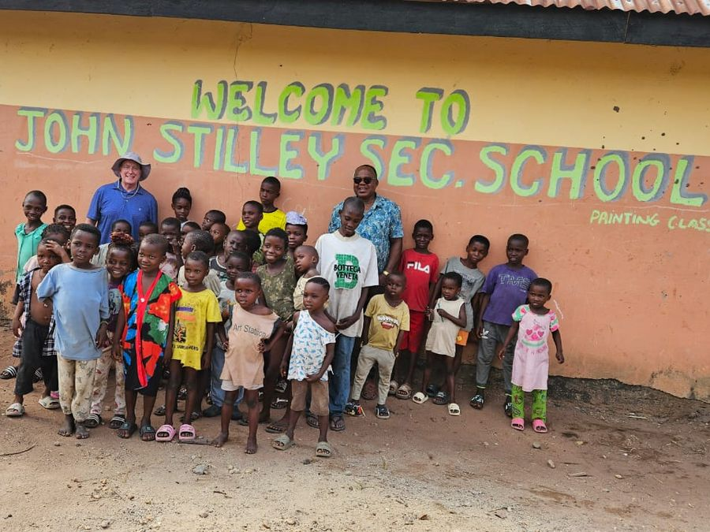
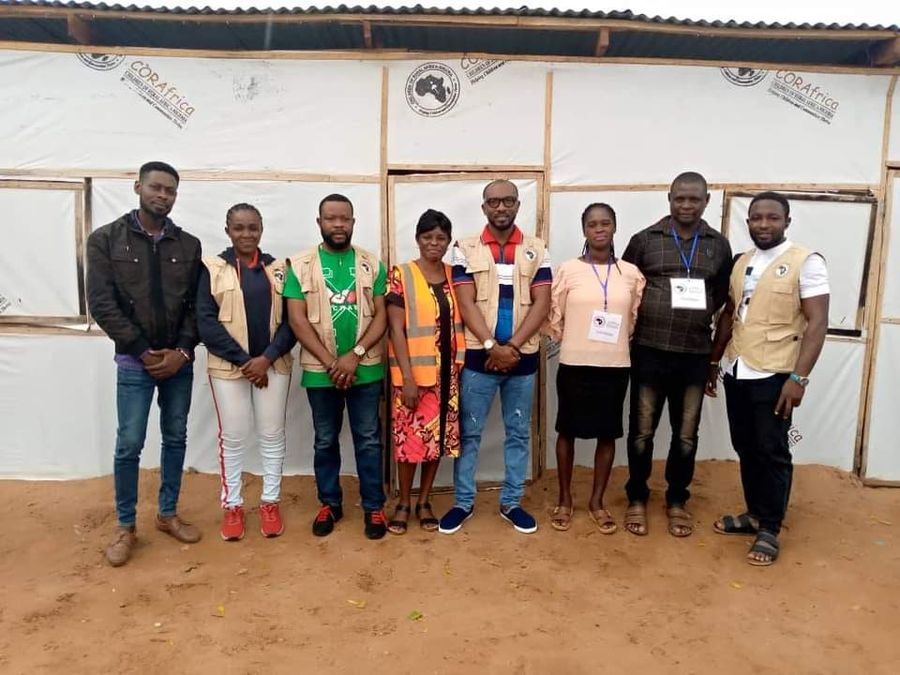
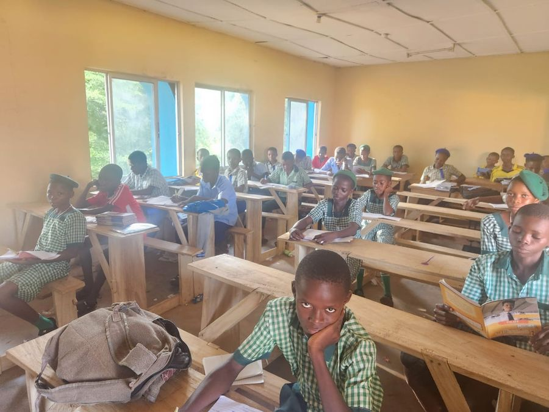

Education
Primary and secondary schools where none exist, with vocational and skills training at their heart.


CORAfrica builds primary and secondary schools in rural Nigeria where none exist — then adds the clinic, the farm and the support for parents that keep children coming back. Founded in 2006, and now building our next Community Education Centre, in Abuja.
Twenty years on the ground
As at September 2026, including schools and clinics now run by the St. Francis Humanitarian Mission
The Community Education Centre
Hunger, illness and a family with no income take more children out of class than any exam does. So each of our centres runs two programmes, education and healthcare, and builds agriculture and economic empowerment into the school itself — for parents as well as pupils. It takes a village to raise a child.
Primary and secondary schools where none exist, with vocational and skills training at their heart.
A clinic inside the school system, and care concentrated on a child’s first 1,000 days.
School farms where children learn the trade by hand, and farming support for parents and guardians where it is available.
Micro-credit for parents and guardians, so a family can afford to keep its child in class.
What we run today
Most of the schools and clinics we founded now run under our partner, the St. Francis Humanitarian Mission. These are the programmes CORAfrica runs itself.
Scholarships, school uniforms and educational materials for children whose families cannot afford them.
Three programmes — St. Thomas Aquinas at Igoli, Holy Family at Ikom, and the CORAfrica programme — that have supported 513 women so far.
Our registered farming company: crops, poultry and livestock, and a training ground for rural farmers.
Our next Community Education Centre, recently begun. About US $2 million will complete it.
Our track record
The schools and clinics below were founded by CORAfrica and now run under the St. Francis Humanitarian Mission. That is the model working: we build where there is nothing, prove it, hand it on, and begin again.

Victoria-Ikom — nursery, primary and secondary, where there was no secondary school

Idum-Mbube — a doctor, ten beds, and a community of 20,000

Cross River and Benue — 1,000 trained in agribusiness, six classrooms built in a camp

How we work
CORAfrica was founded in 2006 by Fr. Peter Obele Abue, and it was never meant to run its schools forever. We build where there is nothing, prove that the model works, and hand it to people who will carry it on. Our first two Community Education Centres, at Idum-Mbube and Victoria-Ikom, have done exactly that: both now run under the St. Francis Humanitarian Mission, which still works with us on funding and operation. So we have begun again, in Abuja.
In the news
Support the work
CORAfrica is a registered 501(c)(3) in the United States, so gifts from US donors are tax-deductible. Give monthly, and we can plan.